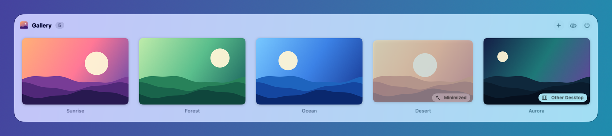
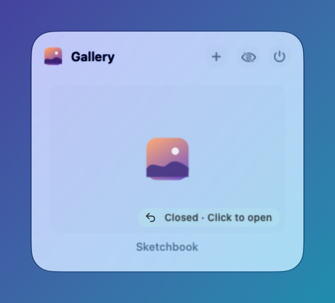
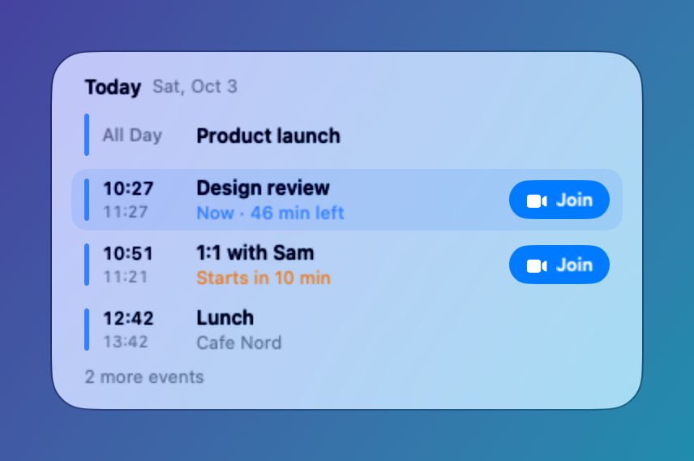
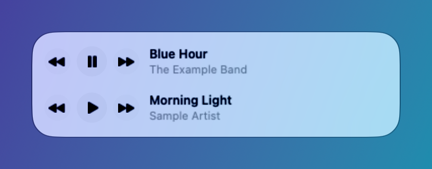
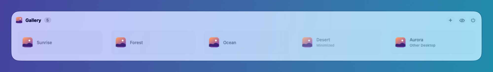
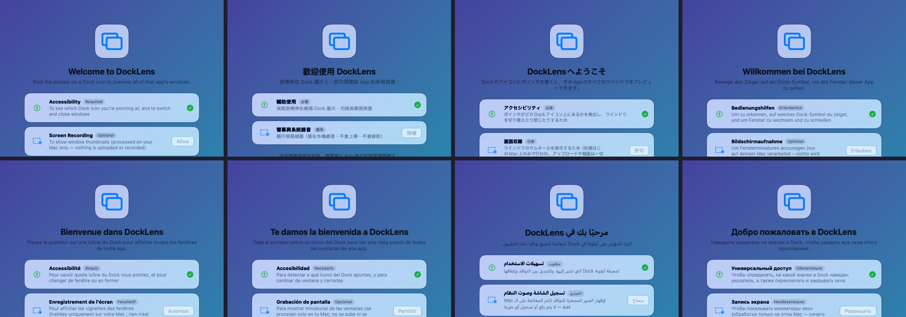

Hover a Dock icon. See every window.
Live thumbnails of every window of an app. Click to switch, or close, minimize and go full screen right from the preview.
brew install --cask firstfu/tap/docklensFree · Open source (GPLv3) · No network unless you check for updates · 34 languages
Every window, one hover away.
DockLens adds a preview panel to the macOS Dock. It stays out of the way until you rest the pointer on an icon.

Including the windows you can't see
Minimized windows and windows on other desktops are listed and labeled. Click one to jump straight to it, even if it's on another Space.
Closed with ✕? Still there.
Apps like Notion and Slack keep running after you close their window. DockLens keeps that window in the list, so one click brings it back.

Your agenda on the Calendar icon
Today, then tomorrow. “Now” and “starts in 10 min” at a glance, plus a Join button for Zoom, Meet and Teams links. Works even when Calendar isn't running.

A playback bar for Spotify and Music
See the current song, then play, pause, skip back or forward without leaving what you're doing.

Recently closed
Documents you just closed in TextEdit, Preview and other file-based apps appear at the bottom of the preview. Click to open the file again. Kept in memory only.
Act from the preview
Close, minimize or go full screen per window; open a new window, hide or quit the app. Optional single keys: W, M, H, Q.
Fits your Dock
Dock at the bottom, left or right. Works with auto-hide, magnification and multiple displays.
Screen Recording is optional
Skip it and the preview lists each window by app icon and title. Switching, closing and minimizing still work.

| Permission | What it's for | If you skip it |
|---|---|---|
| Accessibility Required | Know which Dock icon you're hovering; switch and close windows | DockLens can't work |
| Screen Recording Optional | Live thumbnails, processed on your Mac only | Windows listed by icon and title |
| Automation (Spotify / Music) Optional | Playback bar; asked only when you first press play | No playback bar |
| Calendars Optional | Read-only agenda on the Calendar icon | No agenda |
DockLens makes no network connections unless you ask it to check for updates. Thumbnails never leave your Mac, and every line of code is open for you to read.
Event-driven, with no polling while idle. Measured on Apple silicon with a Release build.
Install in a minute
- Download DockLens.zip and unzip it.
- Move DockLens.app to your Applications folder.
- Open it. If macOS blocks it, go to System Settings → Privacy & Security and click Open Anyway. You do this once per version.
- Allow Accessibility when asked. The other permissions are optional.
Or with Homebrew:
brew install --cask firstfu/tap/docklensRequires macOS 26 or later; runs on Apple silicon and Intel. Builds are not notarized by Apple yet. Updates keep your permissions.
Speaks your language
34 interface languages, following your macOS language setting. Translations are AI-assisted and not all checked by native speakers yet. Help check yours →

Need something else?
DockLens is small and focused on the Dock. If you need an Alt+Tab switcher, gestures or support for older macOS versions, DockDoor and AltTab are established, open-source tools worth a look.